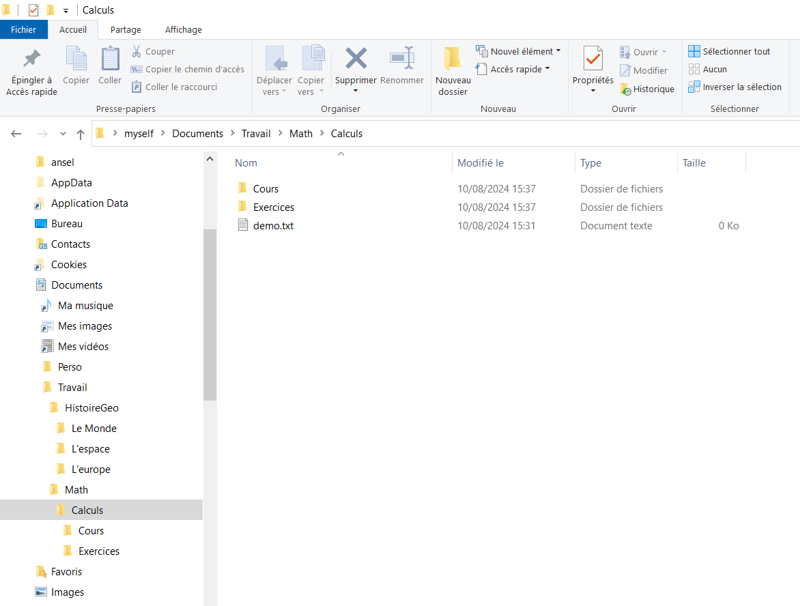
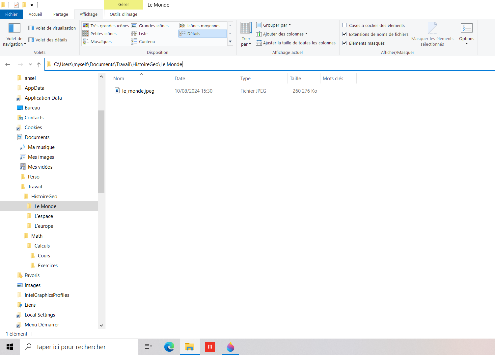

la manipulation des dossiers et des fichiers (création, suppression, copié-collé).
Se repérer dans le disque dur
Fichiers et dossiers
Fichiers
Un fichier est un ensemble de données binaires, enregistré dans une mémoire informatique (disque dur, clé usb, ...) et repéré par un nom.
On ouvre ce fichier avec le programme adapté pour en avoir la représentation (textuelle, audio, vidéo, ...) souhaitée.
Un nom de fichier est par exemple demo.txt.
Le dernier élément du nom, à partir du dernier point, s'appelle l'extension du fichier (ici .txt).
Elle indique la nature du fichier et quel programme permet de le lire.
Un fichier d'extension :
.txt correspond à du texte brut (non formaté), il s'ouvre par exemple avec le bloc-note (notepad) de windows.
.doc ou .docx
kbd> correspond à du texte formaté (mis en forme avec des paragraphes, de la couleur, des images, ...) écrit avec le logiciel de traitement de texte Word
.pdf est écrit dans le langage de description de page Portable Document Format ou PDF inventé par la société Adobe. C'est le format le plus pratique pour échanger des documents (avec textes, images, sons, animations, ...) même entre personnes dont les équipements (programmes, OS, ...) sont très différents.
.jpeg, .png correspondent à des images compressées.
.mp3, .flac correspondent à des sons.
.mp4, .avi correspondent à des vidéos.
.exe correspond à un fichier exécutable (un programme).
Dossiers
Un dossier (ou répertoire) est en fait un fichier spécial (il n'a pas d'extension) dont le rôle est de regrouper des fichiers (et éventuellement d'autres dossiers).
On peut le voir comme un contenant dans lequel on trouvera des fichiers, des dossiers ... ou rien.
Explorateur de fichiers
C'est un programme qui nous permet de naviguer dans le disque dur, d'afficher des caractéristiques des dossiers et fichiers (contenu, date de création, taille, ...) et de manipuler les fichiers et dossiers (création, suppression, déplacement, renommage, ...).

Dans la grande zone blanche de la capture d'écran vous voyez un fichier (demo.txt) et deux dossiers (Cours et Exercices) qui sont contenus dans le dossier Calculs.
Voyons des zones particulières de l'explorateur de fichiers :
La barre contenant les onglets Fichier, Accueil, Partage, Affichage est la barre de menu.
Sous la barre de menu, vous voyez Épingler à Accès rapide, Copier, Coller, ...
Cette zone s'appelle le ruban. Il donne accès à des fonctionnalités proposées par le menu sélectionné dans la barre de menu.
La barre sous le ruban est formée à gauche des flèches permettant de naviguer dans les dossiers et à droite ( > myself > Documents ...) de la barre d'adresse. La barre d'adresse indique le chemin vers le dossier courant (c'est celui que vous avez sélectionné, Calculs dans l'exemple).
Sous la barre d'adresse, La zone gauche de l'écran (contenant les dossiers ansel, AppData, ...) est le volet de navigation. Il affiche l'arborescence des dossiers du disque dur.
La zone à droite du volet de navigation est la zone d'affichage. Elle indique le contenu du dossier courant.
Modifiez quelques réglages de l'explorateur de fichiers :
Dans le ruban de l'onglet Affichage, cochez la case Extensions de noms de fichiers.
Si vous le souhaitez, cliquez sur Options dans le ruban précédent puis sélectionnez l'onglet Affichage et dans la liste Paramètres avancés, cochez la case Afficher le chemin complet dans la barre de titre et cliquez sur OK. Le chemin apparaîtra en haut de la fenêtre.
Arborescence des dossiers
Observez la barre d'adresse, elle contient : > myself > Documents > Travail > Math > Calculs.
Cela signifie que l'on se trouve dans le dossier Calculs, on dit que c'est le dossier courant.
Il est contenu dans le dossier Math, on dit que c'est le dossier parent de Calculs.
Le dossier Math est contenu dans le dossier Travail, sous-dossier du dossier Documents, lui-même contenu dans myself.
C'est confirmé par ce qui est affiché dans la partie gauche de la capture d'écran (sous la barre d'adresse) :
Le dossier grisé est Calculs, c'est le dossier courant autrement dit celui dans lequel vous vous trouvez.
Il est contenu dans Math, lui-même contenu dans Travail, ...
Vous voyez dans la partie droite de la capture d'écran le contenu du dossier courant : le dossier Calculs contient les dossiers Cours et Exercices ainsi que le fichier demo.txt.
Les fichiers et dossiers du disque dur sont présentés comme une arborescence : on se repère dans le disque dur en donnant les dossiers à ouvrir (contenus les uns dans les autres comme des poupées russes) à partir du dossier myself pour arriver dans le dossier courant (Calculs).
Vous voyez dans la partie gauche de la capture d'écran que les dossiers se ramifient comme les branches d'un arbre (regardez le dossier Travail et ses ramifications ainsi que celles de Math).
L'image ci-dessous indique que le dossier myself est contenu dans le dossier users qui est stocké dans le disque dur C:.
Chemins des dossiers et des fichiers

Chemin absolu
Le chemin du dossier courant est C:\Users\myself\Documents\Travail\HistoireGeo\Le Monde.
Il indique la succession de dossier à ouvrir à partir du disque dur (C:) pour arriver au dossier voulu (Le Monde).
Le dossier courant contient le fichier image le_monde.jpeg.
Le chemin de ce fichier est C:\Users\myself\Documents\Travail\HistoireGeo\Le Monde\le_monde.jpeg.
Un chemin est donc l'adresse du fichier ou du dossier voulu dans le disque dur.
Les exemples précédents sont des chemins absolus car ils commencent par le nom du disque dur (C: ici).
Une remarque : sous Windows, le séparateur de dossiers et de fichier d'un chemin est \. Par contre, sous MacOS et Linux, le séparateur est /.
Chemin relatif
On peut indiquer l'adresse d'un fichier (ou d'un dossier) à partir d'un autre dossier. Il s'agit alors d'un chemin relatif.
Pour construire un chemin relatif, on utilise ..\ pour indiquer qu'on remonte d'un niveau (au dossier parent) et .\ pour indiquer qu'on descend dans le dossier courant.
Imaginez que l'on soit dans le dossier Calculs des copies d'écran :
Le chemin relatif du fichier demo.txt est .\demo.txt ou simplement demo.txt.
.\Cours\facile.pdf ou simplement Cours\facile.pdf est le chemin relatif menant au fichier
Le chemin relatif du fichier le_monde.jpeg (voir deuxième image) est
..\..\HistoireGeo\Le Monde\le_monde.jpeg
..\..\ indique qu'on remonte de deux niveaux à partir du dossier Calculs : on arrive donc au dossier Travail (qui contient bien le dossier HistoireGeo.
À partir de là, on ouvre le dossier HistoireGeo puis Le Monde pour trouver le fichier ciblé.
Manipuler dossiers et fichiers
À la souris
Pour créer des fichiers ou des dossiers, il faut se placer dans le dossier parent et utiliser le menu adapté (ou son ruban) ou se placer sur une partie vide de la zone d'affichage et utiliser un clic droit.
Pour agir sur un ou plusieurs éléments (fichiers ou dossiers) :
il faut sélectionner les éléments à traiter.
La sélection d'un élément d'un dossier se fait en cliquant gauche dessus.
Pour sélectionner plusieurs éléments (sélection multiple) d'un même dossier :
Un clic gauche sur un élément puis maintenir la touche Ctrl enfoncée pendant que vous cliquez gauche sur les autres éléments à sélectionner.
Pour sélectionner des éléments contigus il suffit de cliquer sur le premier puis de maintenir la touche Alt enfoncée pendant que vous cliquez gauche sur le dernier élément. Tous les éléments intermédiaires seront aussi sélectionnés.
Il faut éventuellement choisir la destination (où coller des éléments) en sélectionnant le dossier cible.
Il faut ensuite choisir l'action à effectuer (copier, coller, ...). Vous pouvez utiliser les onglets de la barre de menus et les propositions du ruban ou un clic droit sur la sélection.
Raccourcis claviers
Ouverture :
À partir du bureau (par exemple), cliquez sur Windows + E pour ouvrir l’explorateur de fichiers.
Navigation : les raccourcis suivants se pratiquent en étant dans une fenêtre de l'explorateur de fichier.
Ctrl + N : Ouverture d'une nouvelle fenêtre de l’explorateur de fichiers
Ctrl + W : Fermeture de la fenêtre active
Ctrl + F ou Ctrl + E ou F3 : Champ de recherche
Ctrl + L ou Alt + D ou F4 : Sélection du chemin d'accès
Alt + → : Aller au dossier suivant
Alt + ← : Aller au dossier précédent
Alt + ↑ : Aller au dossier parent
Manipulation des fichiers : les raccourcis suivants agissent dans le dossier courant.
Ctrl + Maj + N : Création d'un nouveau dossier
Ctrl + N : Création d'un nouveau fichier
F2 : Renommer le fichier ou le dossier sélectionné
Alt + Entrée (↵) : Ouverture des propriétés du fichier ou du dossier sélectionné
Ctrl + A : Sélection de tout le contenu du dossier courant
Ctrl + C : Copie des éléments sélectionnés
Ctrl + X : Couper les éléments sélectionnés
Ctrl + V : Collage des éléments sélectionnés
La pratique
Créez l'arborescence suivante dans votre dossier utilisateur (cliquez sur les +) :
Lycée
SNT
0-Les_Bases
Cours
0-Bases.html
arborescence.png
chemin.png
cours_style.css
1-Le_Web
Cours
Site
img
video
audio
style
Placez les fichiers 0-Bases.html, chemin.png et arborescence.png dans le dossier 0-Les_Bases\Cours.